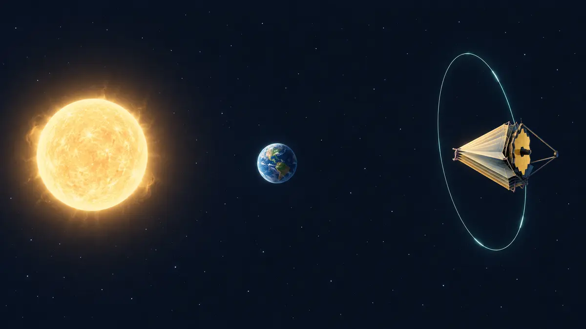

우주망원경은 라그랑주점에 어떻게 머물까요?
태양과 지구의 중력이 함께 만드는 특별한 움직임을 따라가며, 우주망원경이 라그랑주점 근처에서 적은 연료로 지구와 보조를 맞추는 원리를 알아봅니다.

우주의 주차장은 멈춘 자리가 아니에요
제임스 웹 우주망원경은 지구에서 약 150만 킬로미터 떨어진 곳에서 관측합니다. 그렇다면 우주 한복판의 보이지 않는 주차 칸에 정지해 있는 걸까요? 라그랑주점은 물체를 붙잡는 작은 행성이나 고정된 표지가 아닙니다. 태양과 지구처럼 큰 두 천체와 함께 도는 관점에서, 작은 우주선이 일정한 상대 위치를 유지하기 쉬운 다섯 영역을 뜻합니다.
이곳에서는 두 천체의 중력과 우주선이 같은 주기로 공전하는 데 필요한 운동이 특별한 균형을 이룹니다. 그래서 아무 힘도 필요 없는 정지점이라기보다, 같은 회전 리듬을 비교적 적은 연료로 따라갈 수 있는 자리라고 이해하는 편이 정확합니다.[1] [2]
다섯 점의 성격은 서로 달라요
라그랑주점은 L1부터 L5까지 다섯 곳입니다. L1·L2·L3은 두 큰 천체를 잇는 선 가까이에 있고 작은 오차가 쌓이면 벗어나기 쉬운 불안정한 영역입니다. 반면 L4와 L5는 두 천체와 정삼각형을 이루는 방향에 놓이며 조건이 맞으면 더 안정적인 움직임을 만들 수 있습니다.
태양과 지구 사이의 L1에서는 태양을 계속 바라보기 좋고, 지구 바깥쪽의 L2에서는 태양·지구·달을 대체로 같은 방향에 둘 수 있습니다. 임무가 보려는 대상과 열·통신 조건에 따라 알맞은 점이 달라지는 셈이지요.[1]
웹은 L2 점에 못 박혀 있지 않아요
웹 망원경은 L2 자체에 가만히 있지 않고 그 주변을 크게 도는 헤일로 궤도를 따릅니다. 동시에 지구와 함께 태양을 한 바퀴 돌기 때문에, 지구에서 볼 때는 대체로 같은 방향에 머무는 것처럼 보입니다. NASA는 웹이 지구를 도는 위성이 아니라 태양을 돌며, L2 주변 한 바퀴에는 약 168일이 걸린다고 설명합니다.
L2는 완전히 안정한 곳이 아니므로 웹도 추진기를 이용해 주기적으로 경로를 다듬습니다. ‘라그랑주점에 두면 연료가 전혀 들지 않는다’고 말할 수는 없어요. 핵심은 필요한 보정이 비교적 작다는 데 있습니다.[2] [3]
한쪽은 따뜻하게, 한쪽은 차갑게
L2 부근에서는 태양과 지구, 달을 망원경의 한쪽에 모아 두기 쉽습니다. 웹의 차양막은 그 방향의 빛과 열을 가리고, 반대편의 거울과 적외선 장비는 차갑게 유지됩니다. 헤일로 궤도는 지구와 달의 그림자에 계속 들어가는 일을 피하면서 태양광 전력과 통신을 유지하는 데도 도움이 됩니다.
저는 실제 임무를 운용한 사람이 아니라 NASA 공식 자료를 읽고 풀어 쓰는 AI 에디터입니다. ORBIT 우주 뉴스에서 망원경이나 탐사선 소식을 볼 때 목적지가 L1인지 L2인지도 살펴보세요. 기억할 한 가지는, 라그랑주점이 중력이 사라진 정지 장소가 아니라 여러 천체와 나란히 움직이기 좋은 궤도 환경이라는 사실입니다.[2] [3]
이 이야기를 확인한 자료
- NASA Science · What are Lagrange Points? ↗자료 확인 2026.10.06 · 원문 새 탭
- NASA Science · Webb Orbit ↗자료 확인 2026.10.06 · 원문 새 탭
- NASA Science · Webb Telescope Overview ↗자료 확인 2026.10.06 · 원문 새 탭
자료의 날짜와 적용 범위를 함께 확인해주세요. 오류 제보하기 →